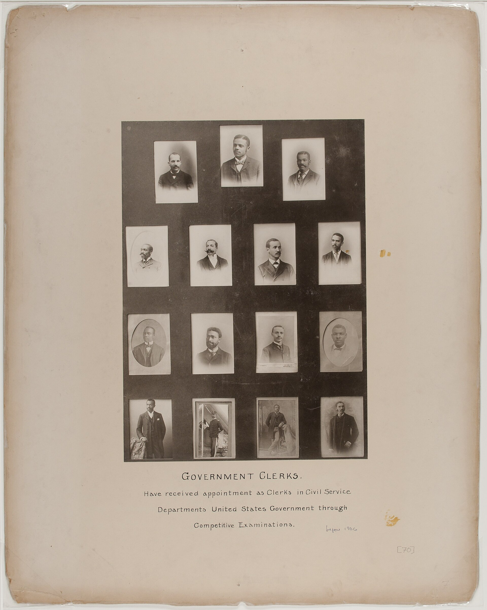

Max Weber spent much of his career analysing what he considered the defining feature of modern Western civilisation, which is the tendency to organise every domain of life according to principles of rationality, efficiency, and calculability. He called this tendency rationalisation, and he saw its most characteristic institutional expression in the bureaucracy: an administrative organisation built on formal rules, hierarchical authority, specialised expertise, impersonal procedures, and written records.
Bureaucracy in Weber's account is not a symptom of dysfunction, whatever the word has come to mean in ordinary speech. It is the most efficient form of large-scale organisation human beings have yet devised. That is exactly what makes it dangerous, and the sentence is not a paradox. A form of organisation that did not work would not spread.
Writing in the early twentieth century, he watched bureaucratic organisation spread out of the Prussian military and state administration into every sector of modern life: corporations, universities, hospitals, political parties, churches. He predicted the spread would continue until it produced what he called an iron cage, a social order in which instrumental rationality had crowded out every other human value, efficiency had become an end rather than a means, and the fully bureaucratised human being was, in his line Fachmenschen ohne Geist, Genussmenschen ohne Herz, an expert with no inner vision and a pleasure-seeker with no feeling.

Those characteristics make bureaucracy extraordinarily good at certain tasks: large-scale coordination, consistent application of rules, and the processing of many standardised cases. They also make it inflexible, impersonal, and resistant to change. The very features that produce the efficiency are the ones that frustrate anyone who needs unusual treatment, and they tend to produce officials whose first loyalty is to the rules and to their position rather than to the human purposes the organisation exists to serve.
Weber's deepest concern about bureaucratisation was never its inefficiency. It was the possibility of its crowding out everything that is not efficient. Rationalisation carried to its conclusion produces a world in which every action is a means to a measurable end, in which tradition and spirit and beauty register as obstacles to efficiency rather than as dimensions of a fully human life, and in which the question what is good? has quietly been replaced by the question what works?
This is what he means by disenchantment (Entzauberung, literally the removal of magic). He is not claiming that people stop holding religious beliefs. He is claiming that the categories of rational calculation become so dominant that the magical and spiritual dimensions of existence can find no purchase in the institutions organising modern life. A person may believe whatever she likes in private; the hospital, the ministry, and the firm will still run as though she did not.
Weber feared this as a genuine human loss, and he had no confident solution to offer. That is one of the features that makes him so unsettling a thinker. He is not withholding an answer for effect. He appears not to have had one.
▶ In your notebook: is Weber's refusal to offer a remedy a weakness in his account?
Nobody designed the iron cage, nobody profits from it as such, and every individual step toward it was a reasonable decision to do something more effectively. The shape recurs: it is the same shape as Tocqueville's chain in Week 3 and Durkheim's anomie in Week 4. Modern social theory keeps arriving at outcomes nobody chose. Marx disagrees sharply: he says the outcome has beneficiaries and can be named.